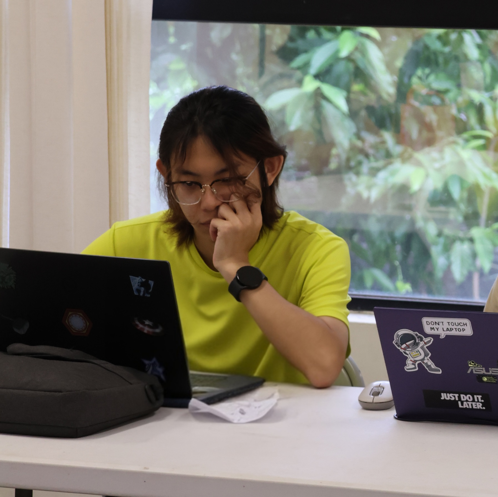
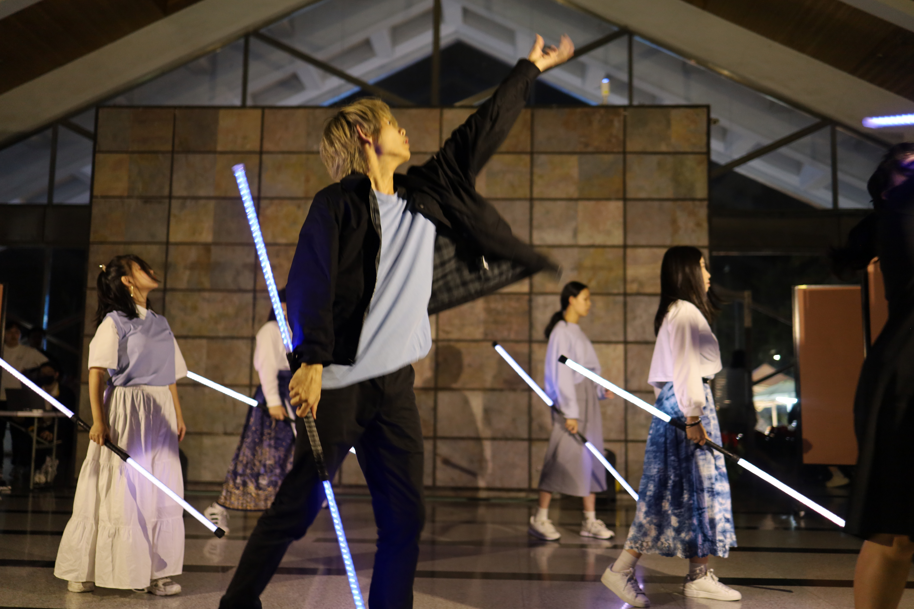
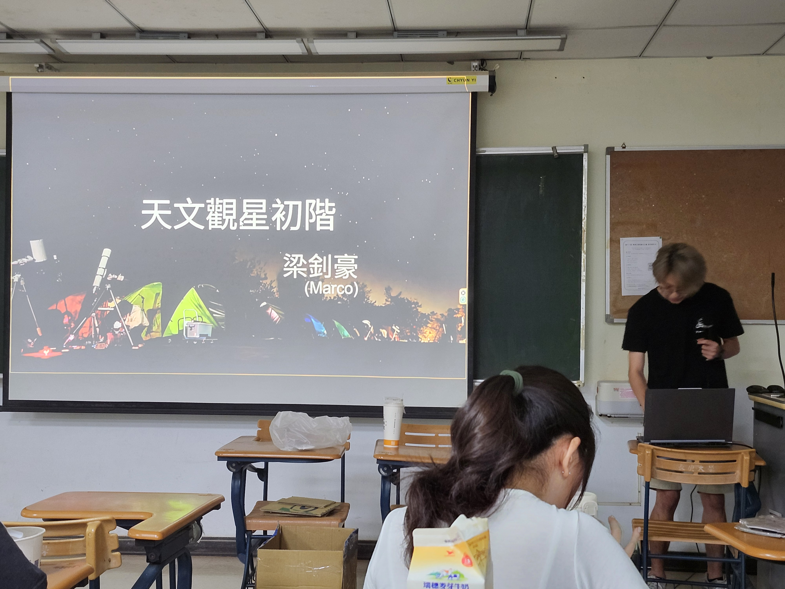
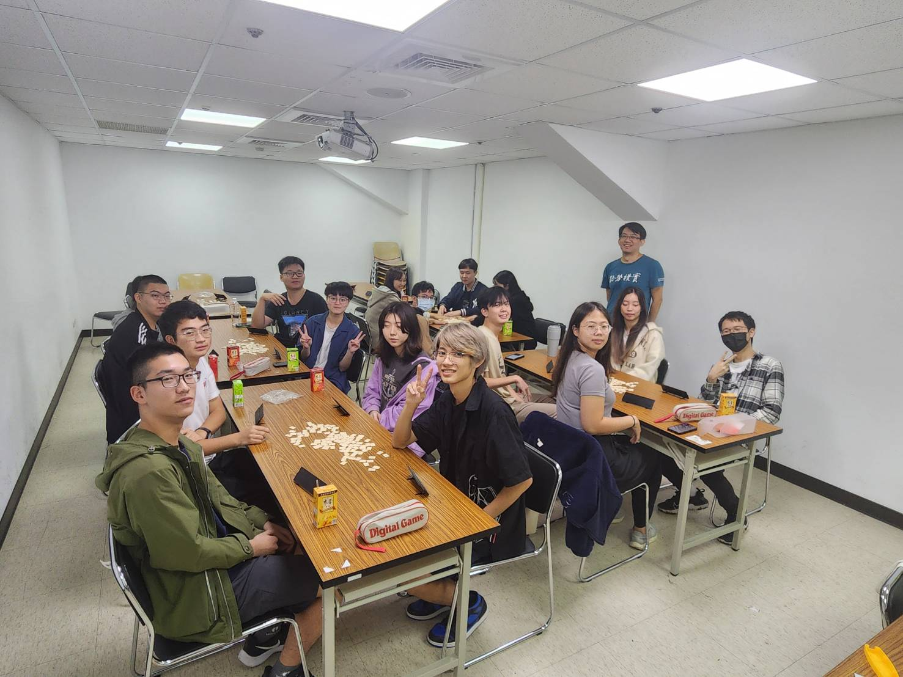
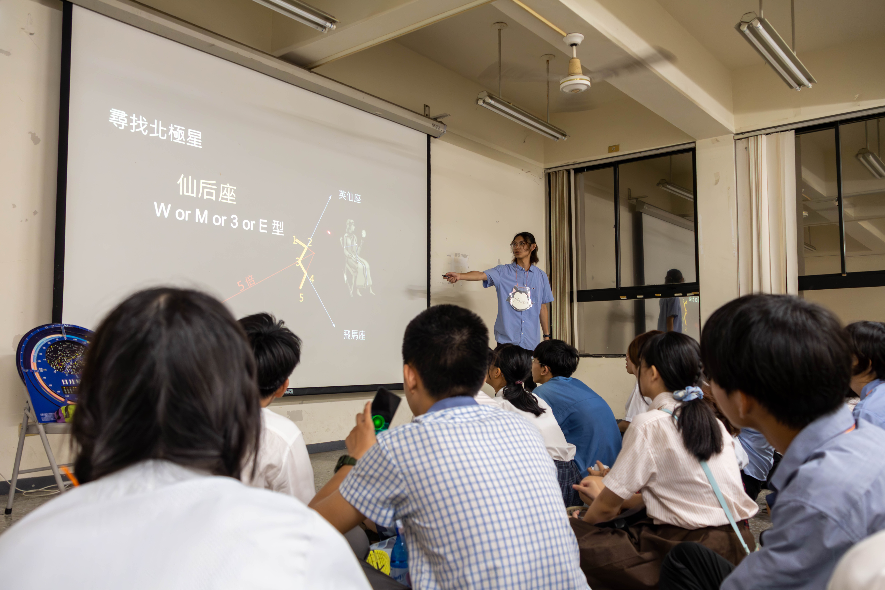
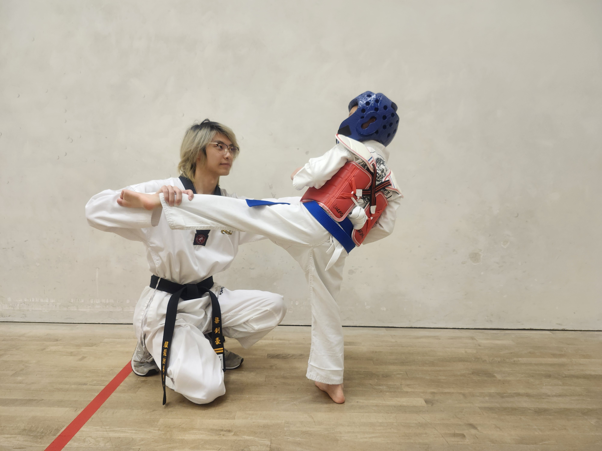
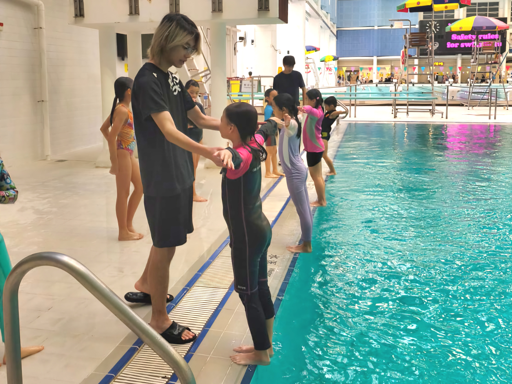

個人經歷詳解
My Professional & Creative Journey
Class cadres / 班級幹部
113–114 學年度
人工智慧學系 學藝股長
作為教授與同學間的正式溝通橋樑，我負責統籌班級學術事務與實驗資料分發。在 AI 學系龐雜的課業壓力下，我致力於建立透明的資訊流，確保每位同學都能同步獲取最新的技術文件與開發資源。

Societies and Activities / 社團與活動

113–114 學年度
光火藝術社 副社長兼總務長
在火舞表演的高壓現場負責風險評估與安全控管。作為總務長，我優化了社團的報帳流程與物資調度，協助團隊在多場校外大型演出中穩定運作，展現了卓越的行政協調與領導力。
113–114 學年度
天文社 副社長兼儀器長
管理精密光學設備，負責日常校準與校內觀測活動的教學。這份經歷培養了我對儀器運作的高度敏銳度，並能將深奧的天文物理概念轉化為對初學者極具吸引力的實作課程。


113–114 學年度
桌遊社 活動長
負責全校性活動策劃，設計互動機制以提升新進社員的參與感。透過對活動流程的精確調度，成功建立了一個兼具趣味性與邏輯挑戰的社團氛圍。
2024 清華大學
星空之子天文營｜教學股
在全國性大型營隊中擔任教學重任。我負責編寫與講授天文物理課程，練習如何在極短時間內將複雜知識傳遞給不同背景的學員，深化了跨領域溝通的軟實力。

Work Experience / 工作經驗

香港駿龍跆拳道會｜副教練
指導學生動作並提供即時糾錯（Debugging）。教練工作讓我學會如何精準拆解複雜的技術細節，並運用個別化回饋幫助學生快速進步。
香港城東體育會｜跳水副教練
在高壓且具風險的環境下進行教學。必須在極短時間內捕捉學員動作中的瑕疵並給予明確建議，這段經歷鍛鍊了我強大的觀察力與問題排查能力。
